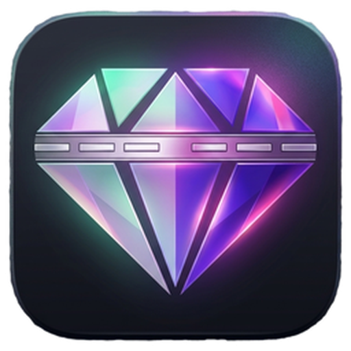

Connection problem?
Check the Dashboard readiness banner. Confirm Twitch and at least one playback source are ready.

AetherisDownloadSUPPORT
Useful checks first, then a direct path to support.
Check the Dashboard readiness banner. Confirm Twitch and at least one playback source are ready.
Make sure YTMD is running and Companion Server is enabled under Settings → Integrations. Default: 127.0.0.1:9863.
Make sure Spotify has an available Connect device and Aetheris still reports Spotify connected.
When contacting support, include your Aetheris version, any error logs you have, and a short description of what happened.
EMAIL SUPPORT
Support, bugs and feedback.